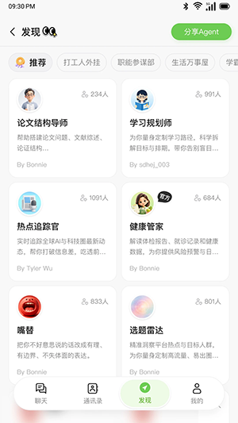

给手机装了个AI同事，三天后我把三个APP卸载了
被一堆杂活逼得快疯的时候，朋友推了UniClaw。装完用了一周，从最初以为又是个噱头，到现在每天都在跟它对话派活。说说真实体验。
为什么我会装它
上周一晚上十点，我在同时开三个APP：一个写周报、一个查合同条款、一个蹲小红书文案。手机屏幕切来切去，每个任务都只推进了一半。这时候朋友发了一句话："你去装个UniClaw试试，我现在一半的活都甩给它了。"
说实话我第一反应是——又来一个AI聊天APP？跟我手机里那三四个有啥区别。但那天实在是烦了，就去搜了一下，找到了UniClaw的官网，翻了翻介绍感觉还挺对口。
初印象：装完就被拦了，但绕过去挺快
安装包从UniClaw下载拿到之后，下载的过程还算顺利，装到一半手机弹了个框："不允许安装来自此来源的应用"。这是安卓的常规安全提醒，不是包有问题。我第一次点没注意，直接点了取消，然后才反应过来要去设置里开权限。
不同机型路径不一样，小米是"更多设置→安全→未知来源安装"，华为多了一层"更多安全设置"。开关一开，装上了。
打开之后第一眼是卡片式的发现页，各种智能体按场景分类摆在那里——图文创作、公文写作、合同审查、招聘管家……不像别的AIAPP一上来就是个空对话框让你自己想prompt，它直接告诉你"我能帮你干这些活"，选一张卡就能开用。

用了三天，挑三件真事说
第一件：写文案真的不用自己抠脑袋了
周二要写一条小红书种草文案，主题是办公效率工具。以前我得先打开小红书刷半小时对标笔记，然后自己吭哧吭哧写，写完改两三遍才能交差。
这次我直接找到图文创作那张卡，输了一句："帮我写三条小红书风格的产品种草文案，主题是AI智能体办公工具，每条200字左右，语气年轻口语化。"
它一口气给了三个完全不同方向的版本——一个走情感共鸣路线，一个给干货清单，一个用场景代入。我挑了情感共鸣那条，又让它"再给一个更酷一点的版本"，几秒钟就出来了。最后我从两个版本里各摘了几句拼在一起，改了改就发了。
整个过程不到五分钟。说出来可能没人信，但真的是这样。
第二件：沙盒隔离这个设计，让我敢传文件了
以前用AI工具我从来不敢传带公司数据的文档，生怕它偷偷存到服务器上。UniClaw有个沙盒隔离的设计我特意研究了一下：它不是拿全盘权限，你上传什么文件它只能碰这些，指定什么资源它只能用这些，不需要的权限一概不申请。
桌面企业版更狠——AI跑在一个独立虚拟机里，默认没有任何外部文件访问权限，你手动授权哪些文件夹让它碰，其他的它连看都看不见。U 盘随身版是硬件级隔离，插到任何电脑上都不碰本机系统。
虽然我目前只用安卓版，但就冲这个设计思路，我敢把合同初稿、周报素材这些东西传进去让它改了。普通安卓APP一装就要通讯录、位置、存储一堆权限，它反过来：你给什么它拿什么。这个体验挺不一样的。
第三件：指令一次说全，效果真的差很多
周三有个活是把部门周报改写成适合周会汇报的版本，300字以内，分"本周完成""下周计划"两个小节，语气要正式结果导向。
我第一次用的时候犯了个错：先发"帮我改改这份周报"，等它出了初稿再补"控制在300字"，再补"分两个小节"。结果AI每次收到新要求都重新调整，前后改了三轮才勉强够。
后来去UniClaw文档翻了一下，按照里面说的把所有要素打包成一句话一次性发出去："帮我把这份周报改写一下，用在部门周会汇报里，语气正式、结果导向，控制在300字以内，分'本周完成''下周计划'两个小节。"
一轮出稿，只改了一个词就过了。省了至少两遍追问的时间。
适合谁，不适合谁
适合的情况很明确：你每天要处理一堆杂活、写一堆东西、看一堆文档，但又不想给每个活都单独找个工具。UniClaw把这些活按岗位智能体的形式打包好了——创作者有图文创作智能体，写公文的有公文写作助手，审合同的有合同审查专家，招聘的有招聘管家。
不太适合的情况也有：如果你是个重度技术用户，需要写代码、跑复杂数据分析，UniClaw目前的能力边界不在那儿。还有就是如果你对数据安全特别敏感，连沙盒隔离都信不过，那可能还是得自己动手。
最后
说实话，用了这一周，我手机里三个APP的打开频率直线下降：那个专门写文案的、那个改文档的、那个查条款的，基本都被UniClaw替了。它不是完美的——偶尔也会理解错方向，也需要你给反馈迭代——但作为一个能帮你分担大量重复性脑力劳动的AI同事，它够好用了。
如果你跟我一样被杂活烦得不行，可以试试。对了，为了防止单点访问不了，我把这套资料在三个开源仓库都备了一份——GitHub、Gitee、GitCode，国内访问不了GitHub的直接跳Gitee或GitCode就行。